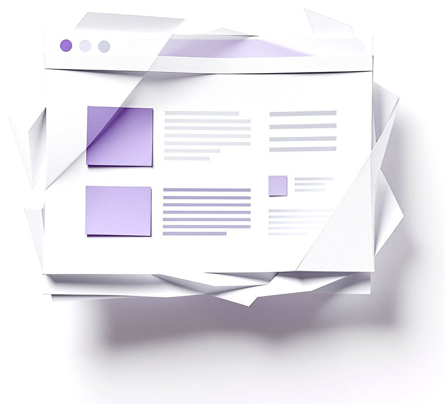
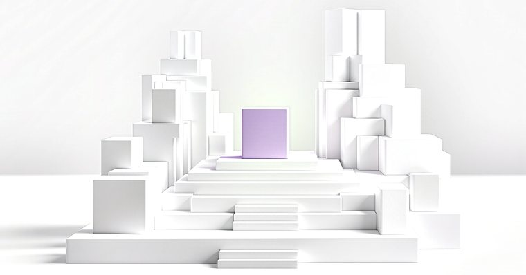
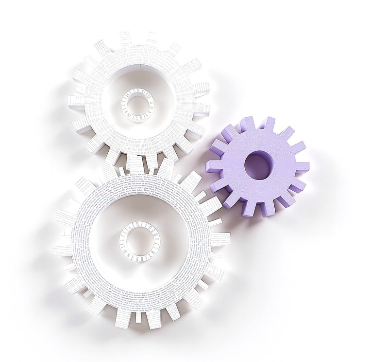

Wir bauen Köpfe.
Websites, Plattformen, Software und Automatisierungen, alles mit KI gebaut. Du bringst den Engpass, wir bauen das Ding, das ihn löst.
Software aus Erfurt. Der Beweis steht weiter unten.

Was wir bauen.
Drei Ströme, ein Anspruch: es läuft bei dir im Betrieb, nicht in einer Präsentation.

Websites, die verkaufen.
Auftritte wie dieser hier: schnell, präzise, mit Bildwelt und Bewegung, die kein Baukasten hinbekommt.
In Tagen statt Monaten gebaut.
Software und Plattformen.
Vom internen Werkzeug bis zur Plattform mit Konten, Rollen und Abrechnung. Nach Maß, nicht von der Stange.
Unsere eigene Plattform ist Referenz.
Automatisierung mit KI.
Angebote, Rechnungen, Berichte, Postfächer: was dich jede Woche Stunden kostet, erledigt sich künftig selbst.
Dein Ablauf, minus die Handarbeit.Der erste Kopf im Regal: unsere eigene Plattform.
Wir verkaufen nichts, was wir uns nicht selbst gebaut haben. quoroAI gibt Unternehmensberatungen einen KI-Berater unter eigener Marke, mit Mandaten, Zeiten und Abrechnung.
So läuft es.
Du erzählst, was dich aufhält.
Ein Gespräch, keine Folien. Wir stellen die Fragen, die weh tun, und sagen dir ehrlich, ob sich das lohnt.
Wir bauen den ersten Wurf.
In Tagen, nicht Quartalen. Du klickst auf etwas Echtes und entscheidest am Ergebnis, nicht am Konzept.
Es läuft, und wir bleiben dran.
Betrieb, Pflege, Ausbau. Dein Kopf im Regal wird mit jedem Monat schlauer.
Erzähl uns, was dich aufhält.
Eine Mail genügt. Du bekommst keine Broschüre zurück, sondern eine Einschätzung und einen Vorschlag für den ersten Wurf.